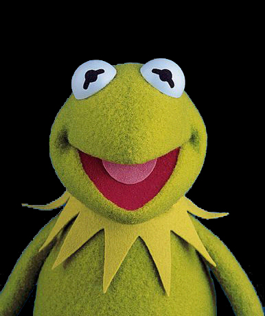

I am Blue.
I am Blue too.
I am also Blue. But I am technically "midnight navy". Who chooses these names anyway?
I AM BLUE!
i am green.....
Hello green. I am Green.
HI GUYS! I'M GREEN TOO!!
KERMIT! Kermit K E R M I T KERMIT!
